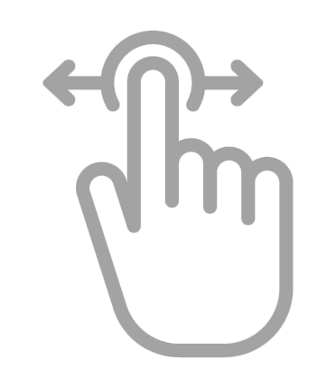
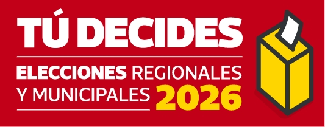

Has scroll para ver a los partidos y candidatos
Informacion del partido o candidato elegido

Revisamos los planes de gobierno de los candidatos a la Alcaldía de Lima, clasificamos sus propuestas por temas con ayuda de inteligencia artificial y revisamos editorialmente los resultados. Esta herramienta no te dirá por quién votar ni cuál plan es “mejor”, pero te permitirá explorar por candidato o partido y comparar, tema por tema, qué propone cada uno y qué aspectos no desarrolla.
Elige la opción que prefieras para iniciar
Encuentra resúmenes claros de cada plan y accede a una versión concisa de los temas principales que aborda.
Estos resúmenes se basan en los planes oficiales presentados ante el JNE. Usamos el propio vocabulario de cada partido para reflejar fielmente su identidad, no la opinión de este medio.

Has scroll para ver a los partidos y candidatosSelecciona hasta 3 opciones y revisa sus planteamientos. Si ves un espacio vacío, es porque el plan no desarrolla ese tema de manera sustancial.
La clasificación de cada candidato se basa en un análisis técnico de los Planes de Gobierno oficiales ante el JNE. El texto es un resumen de los planteamientos más relevantes, evaluando únicamente la precisión de la redacción original (la forma) y no la viabilidad de las promesas (el fondo).
Para el analisis, identificamos el Enfoque del texto como 'Operativo' (obras), 'Tecnocratico' (gestion) o 'Normativo' (leyes y valores). Asimismo, definimos la Formulacion de propuestas segun su detalle tecnico: 'Detallada con indicadores' si incluye metas y cifras exactas; 'Con lineamientos generales' si describe la ruta sin metricas; o 'Declarativa' si expresa intenciones sin una hoja de ruta tecnica.
Texto placeholder de metodologia. Describe aqui como se procesaron los planes de gobierno de los candidatos a Lima 2026.
Conoce el detalle del metodo de analisis aqui